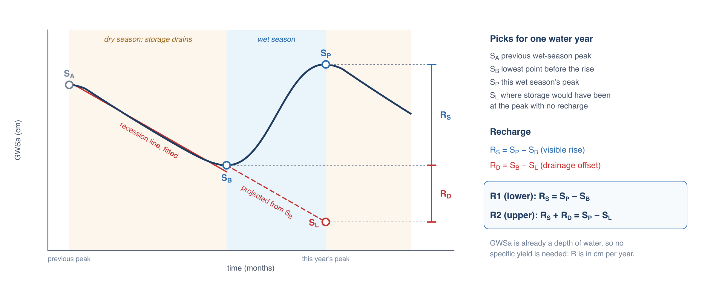

The WTF Method
Recharge from a rising water table
The water table fluctuation (WTF) method estimates groundwater recharge from the rise in groundwater levels that follows a wet season (Healy and Cook, 2002). In a climate with one dry season and one wet season a year, storage drains through the dry months as groundwater discharges to streams, springs, wells and evapotranspiration. When rain or snowmelt reaches the water table, storage rises again. The size of that rise measures how much water entered the aquifer.
On a well hydrograph the rise is a change in head, Δh, and recharge is the specific yield of the aquifer times that rise:
Specific yield is rarely known well, and it varies through an aquifer, so it is often the largest source of error in a well-based estimate. GRACE removes that step. GWSa is already a depth of water, the change in groundwater storage averaged over the region, so applied to GWSa the method gives recharge directly in centimeters per year, with no specific yield:
Barbosa et al. (2022) applied the method this way to the Iullemeden and Chad basins in Niger, using the GRACE groundwater record in place of well hydrographs (see Case Studies). The app's Recharge Analysis page follows their approach.
One water year
The method works one water year at a time. A water year holds one dry season followed by one wet season, so it starts in the month when storage is usually lowest. For each water year the method needs four values of GWSa:

- SA, the previous wet-season peak, where the dry-season recession begins
- SB, the trough, the lowest storage before this year's rise
- SP, the peak this wet season reaches
- SL, the storage the aquifer would have reached at the time of the peak if it had gone on draining with no recharge
The recession line gives SL. A straight line is fitted to GWSa from SA down to SB, which gives the rate at which storage drains with no recharge. That slope is then carried on from SB to the month of the peak:
where m is the slope of the fitted line (cm per month), and tB and tP are the months of the trough and the peak.
Two estimates of recharge
The visible rise from trough to peak is
The aquifer keeps draining while it is being recharged, so some of the water that arrived during the wet season left again before the peak and never shows in the rise. The recession line estimates that loss as the further decline storage would have shown with no recharge:
Together they give two estimates, which the app reports as R1 and R2:
R1 counts the visible rise only, so it is a lower estimate. R2 adds back the drainage during the rise, but it depends on carrying the recession line forward over months it was not fitted to, and the drainage rate usually slows as storage falls, so R2 is an upper estimate. Barbosa et al. (2022) call these Method 1 and Method 2 and report both. The true recharge most likely falls between them.
When storage was steady or rising before the trough, there is no drainage to correct for: the app sets SL = SB, and R2 equals R1.
Applying the method to GRACE data
GRACE data differ from a well record in several ways, and the app handles each one.
Gaps. The method needs a value for every month: a missing month at a peak or trough changes that year's result. The Recharge Analysis is only available with the Seasonal model gap fill, and it runs on the filled series (see Gaps in the Record). Years whose picks or recession line fall on filled months are marked in the results.
Long-term trends. Many regions have a steady decline or rise in storage over the record. Picked on the raw series, a steep decline would push each year's highest month to the start of the water year and its lowest month to the end. The app picks the peak and trough months on the series with the long-term trend removed (the trend of the seasonal model), then reads SP, SB and the recession line from the filled series itself.
The water year. The app finds the month with the lowest value in the average seasonal cycle and starts each water year there. You can choose a different starting month (see Water Years and Picks).
The picks. In each water year, SP is the highest month of the detrended series. SB is the lowest detrended month between the previous year's peak and this year's peak. SA is the previous year's peak. The first water year in the record has no previous peak, so its SA is the highest detrended month before its trough.
The recession line. The line is a least-squares fit to the filled GWSa from SA to SB. When the trough comes less than four months after SA, the fit uses the four months ending at the trough instead, so a slope is never fitted to two or three points.
Units. GWSa is in centimeters of water, so R1 and R2 are in cm per year, averaged over the region. Multiplied by the area of the region they give a volume:
Where the method applies
The method reads each year's rise as that year's recharge, so it needs a clear annual cycle with one recharge season a year. It works best where:
- storage rises and falls once a year, at about the same time each year
- the seasonal swing is large next to the ±1σ uncertainty of a monthly GRACE value
- the dry-season decline is natural drainage rather than pumping
It does not apply where recharge happens all year with no clear rise, in arid regions with little seasonal recharge, or where multi-year wet and dry periods dominate the record. The app tests each series for these conditions before it runs the method (see Opening the Analysis).
References
- Healy, R. W., and Cook, P. G. (2002). Using groundwater levels to estimate recharge. Hydrogeology Journal, 10, 91–109. doi:10.1007/s10040-001-0178-0
- Barbosa, S. A., Pulla, S. T., Williams, G. P., Jones, N. L., Mamane, B., and Sanchez, J. L. (2022). Evaluating groundwater storage change and recharge using GRACE data: A case study of aquifers in Niger, West Africa. Remote Sensing, 14(7), 1532. doi:10.3390/rs14071532